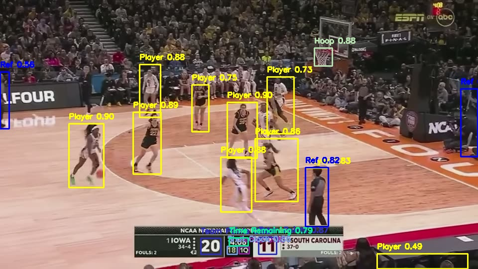
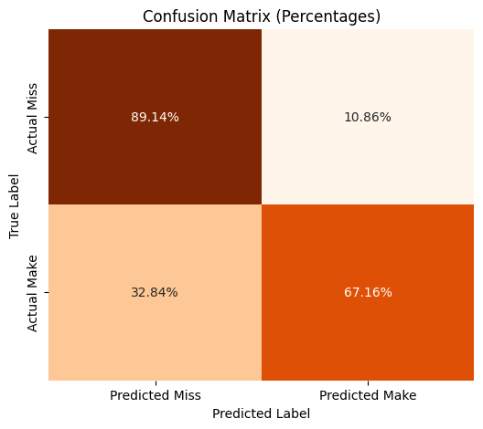
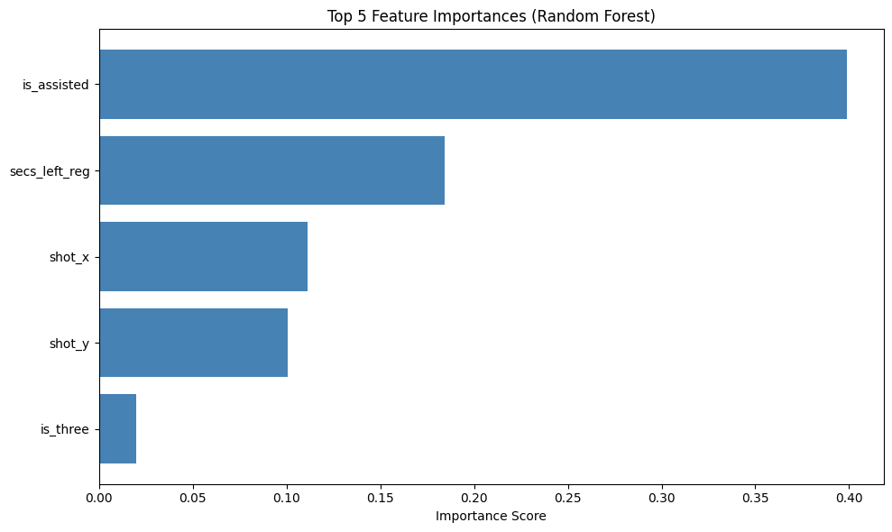

P02 / PROJECT
Computer Vision & Machine Learning
This project is still in progress. It uses computer vision to identify and map women's basketball players' positions on the court, and these coordinates are then homographized in order to be represented in 2D. In addition, a predictive model uses game features, including player x and y coordinates, to predict shot success.
View on GitHub →

